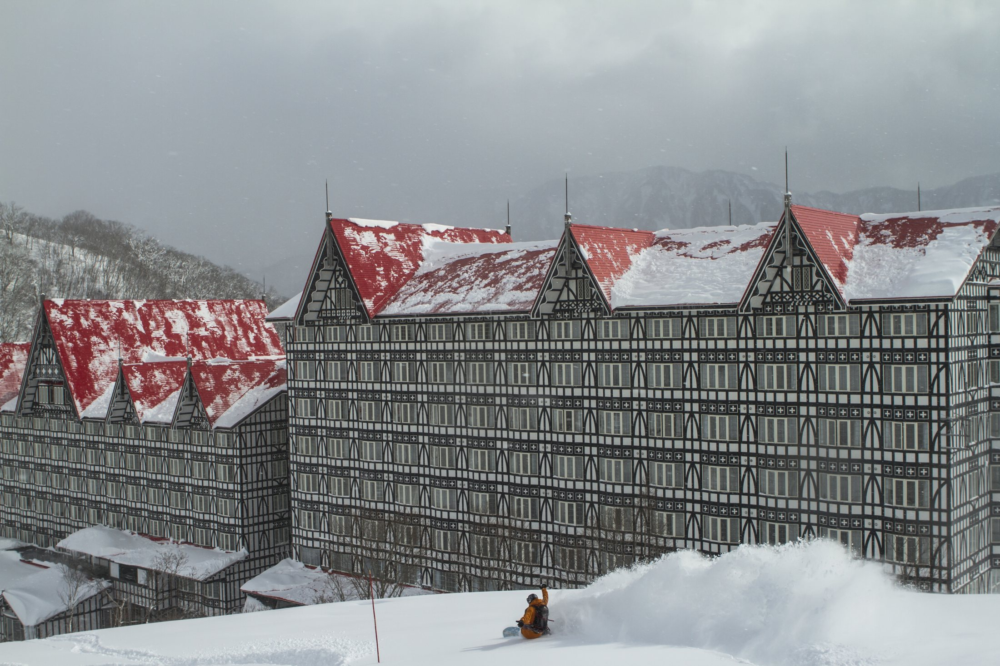
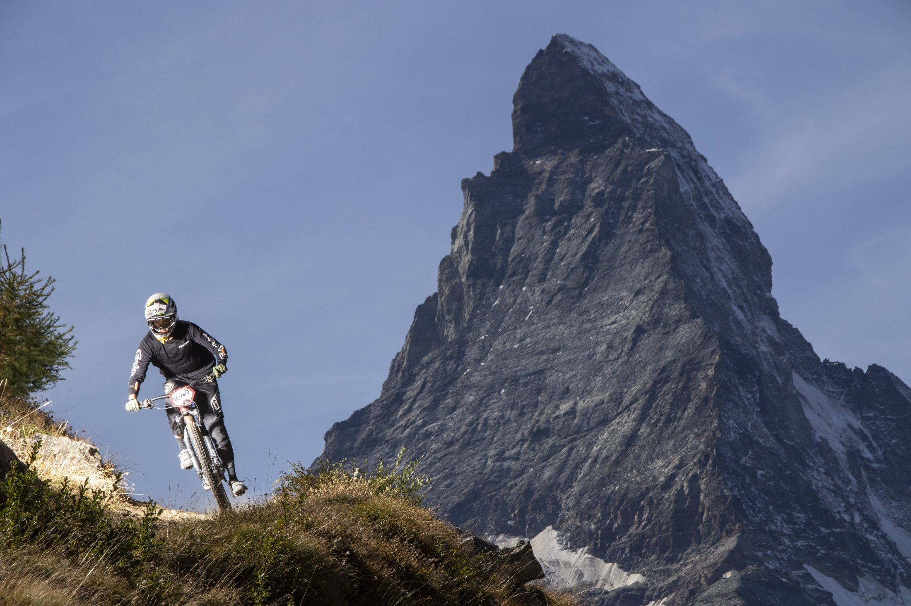
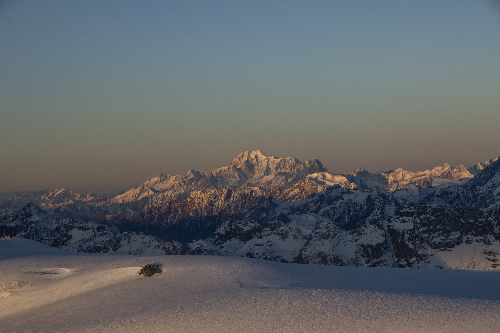
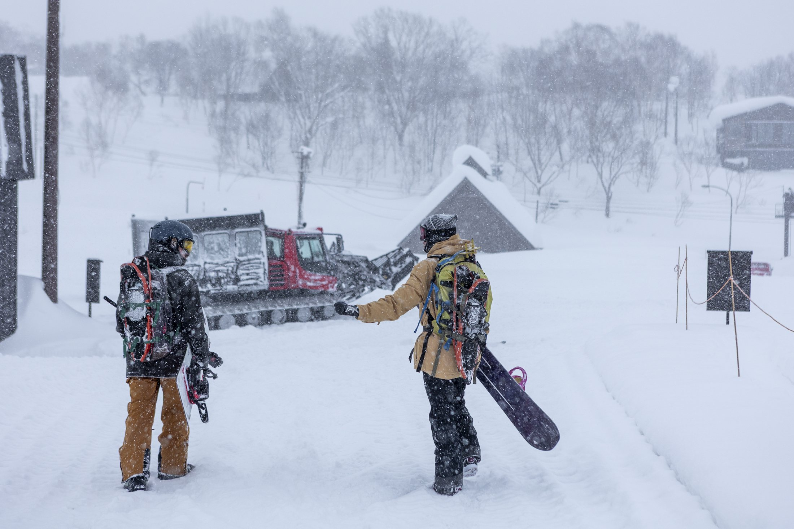

Hotel & guest experience
Rooms, shared spaces, food and the moments that make a stay memorable, photographed and filmed on location.
A CREATIVE PROPOSAL FOR EVENIA MONTE ALBA
Photography and film to bring the feeling of a mountain stay to life, from first tracks to summer trails.
01 / THE OPPORTUNITY
Evenia Monte Alba sits in Cerler, a starting point for a stay in the mountains. Let's show what that stay can feel like, on the slopes and beyond.
We propose producing new photography and film on location: the hotel, its setting and the experiences that bring people there. Content your team can use to build its own campaign, or a complete campaign created together.
DISCUSS A PRODUCTION ↗02 / TWO CREATIVE DIRECTIONS
Explore two directions we could develop around the hotel's priorities.

Capture the anticipation of a ski day, the energy on the mountain and the comfort of coming back to the hotel. A visual story for guests who want the whole experience.
The photographs on this page are examples from Juan's portfolio. They do not depict Evenia Monte Alba or Cerler. New material would be created for the project.
03 / SELECTED WORK




THE HOTEL EXPERIENCE
From the first coffee to the return from the slopes, we can photograph and film the moments that make a stay at Monte Alba feel inviting. Rooms, common spaces, food and real guest experiences can become a visual story for your website and campaigns.
Portfolio example. New images of the hotel and its guests would be produced on location.
04 / WHAT WE CAN CREATE
Rooms, shared spaces, food and the moments that make a stay memorable, photographed and filmed on location.
Snow sports, landscapes and a possible cycling direction, developed around the experiences and seasons Evenia wants to promote.
We can supply finished visual material for your team or create a campaign together. Scope, formats and usage are agreed around your needs.
05 / THE PERSON BEHIND THE CAMERA
I'm Juan Aizpuru, a photographer and filmmaker with extensive experience working in mountain environments and around outdoor sports. I lived in Switzerland for ten years, immersed in the culture and activities of the Alps.
That experience helps me work close to the action and understand the people who come to the mountains. For this project, I'd work with your team and local partners to make the story fit Evenia.
VIEW MY PORTFOLIO ↗LET'S MEET AT FITUR
I'd love to hear which season, audiences and experiences matter most to Evenia, and discuss a production built around them.
Visit my website ↗Or connect with Juan Aizpuru on FITUR LiveConnect.